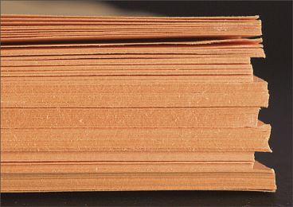
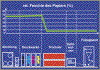
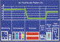
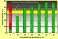
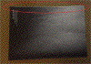

AUSWACHSEN DER LAGEN - STUFENBILDUNG
|
Von Stufenbildung bzw. Auswachsen der Lagen spricht
man, wenn die einzelnen Falzbogen an der
Außenkante eines Buchblockes, in
Ausnahmefällen auch am Kopf- und
Fußende, keine gleichmäßige Kante
bilden, sondern ein reliefartiges Aussehen haben
(Abb. 1 und Abb. 2). Die Stufenbildung wird vom
Endkunden meist aus ästhetischen
Gesichtspunkten reklamiert.
|

|
|
|
|
|
|
Mögliche Ursachen:
|
|
|
|
Abb. 2: Stufenbildung am Vorderbeschnitt eines
Buchblocks.
|
|
|
|

|
|
Abb. 3: Feuchteprofil des Papiers beim
Maschinendurchlauf ohne
Rückbefeuchtung.
|
|
|
|

|
|
Abb. 4: Feuchteprofil des Papiers beim
Maschinendurchlauf mit Rückbefeuchtung.
|
|
|
|

|
|
Abb. 5: Messungen der relativen Feuchte des
Papiers bei
verschiedenen Einstellungen der
Rückbefeuchtung.
|
|
|
|

|
|
Abb. 6: Gesamtansicht der im Rollenoffset
produzierten Broschur ca. 3 Wochen nach dem
Dreiseitenbeschnitt.
|
|
|
|
|
|
Abb. 7: Vergrößerte Aufnahme des
Auswachsen des Innenteils.
|
|
|
|
|
|
|
|
|
|

|
|
|
|
|
|
|
Das Auswachsen der Lagen tritt dann auf, wenn ein Papier im
Buchblock nach dem Beschnitt Feuchtigkeit aus der
Umgebungsluft aufnimmt. Papier reagiert bei
Feuchtigkeitsaufnahme immer mit Dimensionsänderung
(Dehnung), überwiegend quer zur Faserlaufrichtung.
Bei der meist üblichen Faserlaufrichtung parallel zum
Bund findet dann bei Feuchtigkeitsaufnahme eine
entsprechende Dehnung zur Außenkante hin statt.
Voraussetzung für diesen Vorgang ist, dass das Papier
im Buchblock eine deutlich geringere Feuchte wie die
Umgebungsluft aufweist.
Meistens tritt das Auswachsen bei der Verarbeitung von
„gemischten Produktionen“ innerhalb eines
Buchblocks auf. Gemischte Produktion bedeutet, dass ein Teil
des Buchblocks im Rollenoffset und ein Teil im Bogenoffset
gedruckt wurde. Es ist bekannt, dass beim Bogenoffset die
relative Feuchte des Papiers vor und nach dem Druck nahezu
gleich bleibt, sich also im Bereich von 50 % ± 5 %
bewegt.
Beim Rollenoffset dagegen wird das Papier durch die
Heißlufttrocknung der Druckfarben stark thermisch
belastet und hat nach dem Druck eine relative Feuchte von z.
T. unter 10 %. Nach der Verarbeitung zeigen sich dann
zwischen den beiden unterschiedlichen Produktionen vorerst
noch keine Unterschiede am Außenbeschnitt.
Es erfolgt zuerst ein Feuchteaustausch zwischen den Papieren
und dann erst eine Anpassung an die Umgebungsfeuchte bzw.
Umluft. Als Folge davon schrumpfen die Papierfasern des im
Bogenoffset gedruckten Teils und die Papierfasern des im
Rollenoffset gedruckten Teils dehnen sich.
Wird die Laufrichtung senkrecht zum Bund gewählt, so
tritt das Auswachsen bei Feuchtigkeitsaufnahme in Richtung
zum Kopf- und Fußende auf.
Bei stehender Produktion , also Faserlaufrichtung parallel
zum Bund, kommt es zu einem Auswachsen zur Außenkante
hin.
Werden innerhalb eines Buchblocks Papiere mit stark
unterschiedlicher Kompressibilität eingesetzt, kann
auch ohne den Einfluss der Feuchtigkeitsaufnahme eine
Stufenbildung während des Dreiseiten-Beschnitts der
Produkte entstehen. Die Papiere mit höherer
Kompressibilität dehnen sich gegenüber Papieren
mit geringerer Kompressibilität beim Aufsetzen des
Pressbalkens stärker. Bei der Entlastungsphase des
Papiers nach dem Beschnitt bzw. nach der Entlastung durch
den Pressbalken kann dadurch eine Stufenbildung am Beschnitt
resultieren.
|
Mögliche Abhilfen:
|
|
Beim Rollenoffset können optional
Wiederbefeuchtungsanlagen installiert werden.
Diese Anlagen ermöglichen eine Befeuchtung der
Papierbahn über die komplette Bahnbreite nach der
Trockenstrecke. Dadurch ist es möglich, das Niveau der
relativen Feuchte des Papiers nach dem Druck, das ohne
Rückbefeuchtung deutlich unter 10 % liegt, auf einen
Wert von ca. 35 % zu steigern. Die Abbildung 3 zeigt das
Feuchteprofil des Papiers während des Durchlaufs durch
die Druckmaschine ohne Rückbefeuchtung. Es wird dabei
deutlich, dass die relative Feuchte des Papiers nach der
Trockenstrecke auf einem Wert von weit unter 10 % konstant
bleibt. Bei der Produktion mit Rückbefeuchtung (Abb. 4)
zeigt sich dagegen, dass die relative Feuchte des Papiers
bis zu einem Wert von ca. 35 % angehoben wird.
Die Abbildung 5 zeigt die Ergebnisse von Messungen der
relativen Feuchte des Papiers während des Drucks bei
unterschiedlichen Einstellungen der
Rückbefeuchtungsmenge. Ohne Rückbefeuchtung (1.
Säule) wird die Ausgangsfeuchte des Papiers von ca. 45
% auf ca. 5 % drastisch reduziert. Bei steigender
Rückbefeuchtungsmenge zeigt sich, dass das Papier bis
zur Ausgangsfeuchte wiederbefeuchtet werden kann. Die
Hersteller von Rückbefeuchtungsaggregaten empfehlen bis
max. zu einer relativen Feuchte von 35 %
rückzufeuchten, um übermäßige
Welligkeit der Drucke zu verhindern. Durch die
Wiederbefeuchtung des Papiers unmittelbar nach dem Druck
kann also die Feuchtigkeitsaufnahme der Umgebungsluft und
somit nachträgliche Dimensionsänderung weitgehend
verhindert werden.
Dies ist insbesondere bei der Verarbeitung von
„gemischten Produktionen“ unbedingt erforderlich,
da andererseits das Auswachsen der im Rollenoffset
produzierten Lagen nicht zu vermeiden ist.
Bei der Produktion von Buchblöcken mit hoher Seitenzahl
ist darauf zu achten, dass Papiere mit ähnlichem
Kompressionsverhalten eingesetzt werden.
|
Beispiel(e):
|
|
Der 64-seitige Innenteil eines Kataloges wurde im
heat-set-Rollenoffset produziert, der Umschlag im
Bogenoffset. Nach der Klammerheftung erfolgte der
Dreiseitenbeschnitt und unmittelbar danach die Auslieferung
zum Kunden. Ca. 3 Wochen nach der Auslieferung reklamierte
der Kunde die komplette Auflage, da der Innenteil
gegenüber dem Umschlag um fast 1 mm ausgewachsen war
(Abb. 6 und Abb. 7).
Rückfragen ergaben, dass der Innenteil ohne
Rückbefeuchtung produziert wurde und es dadurch
anschließend bei der Reklimatisierung zum Auswachsen
des Innenteils kam.
Da es sich um einen hochqualitativen Katalog handelte,
musste die komplette Auflage nachgeschnitten werden. In
diesem Fall konnten größere Reklamationskosten
durch eine nicht allzu aufwändige Nachbearbeitung
vermieden werden. Aus anderen Fällen (z. B. bei
Deckenbänden) ist bekannt, dass die Buchdecke im
Nachhinein wieder entfernt werden musste, damit der
Innenteil nachgeschnitten werden konnte.
Die Buchdecke musste dann wieder neu produziert und erneut
mit dem Innenteil gebunden werden.
|
Allgemeine Hinweise:
|
|
Für den Reklamationsfall:
Reklamierte Muster sicherstellen.
Feuchte der bedruckten Bogen messen.
Produktionsdaten protokollieren.
Ergänzende Literatur:
FALTER, K.-A.; SCHMITT, U.:
Einfluss der Hitzeeinwirkung auf die
Festigkeitseigenschaften und die Dimensionsveränderung
des Druckpapiers.
München: FOGRA, 1989 (4.035) - Forschungsbericht
FALTER, K.-A.; KIRMEIER, M.:
Erfassung der Wirkungsweise von Rückbefeuchtungsanlagen
in Rollenoffsetmaschinen.
Wiesbaden: Bundesverband Druck E.V., 1995 -
Informationen
BETZLER, F.:
Stufenbildung bei Broschuren und Buchblocks. Untersuchung
von Ursachen bei gleichartigen Papierqualitäten nach
dem Dreiseitenbeschnitt.
Wiesbaden/München: Bundesverband Druck und Medien
e.V./FOGRA, 1991
(4.047) - Forschungsbericht
|
|
|
|
|
|
|
Kontakt:
stadler@fogra.org
|
Aus-sta-200112
|